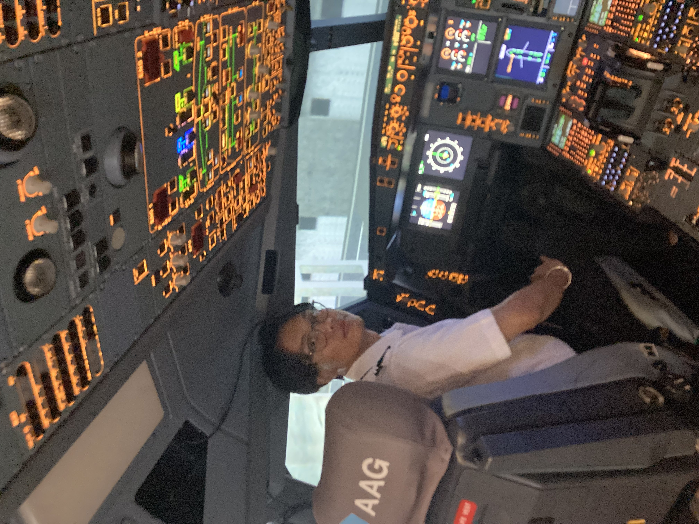
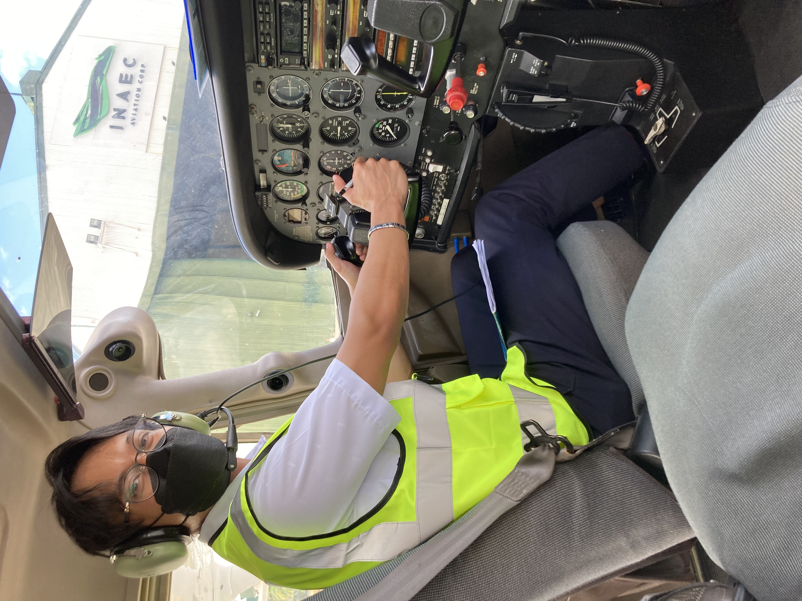

Internships
Fifteen-plus pre- and post-flight inspections across A320, ATR-72 and B737 during line maintenance, then an A320 engine overhaul in base maintenance, including a torque-controlled fastener installation on a wing leading-edge de-icing boot under a licensed mechanic's sign-off. The last rotation was technical records: reviewing NRC, service-bulletin and airworthiness-directive compliance.
Also where I learned to safety-wire properly. It is a small, unglamorous detail, but it tells you whether a job was done by someone paying attention.
Flight simulation sessions on a Cessna 172 and an A320, trainer aircraft external inspection and cockpit prep, and one supervised engine run-up and taxi on the Cessna, working through the function checks and fault indications that go with it.
A fault indication reads differently once you have sat in the seat that shows it to you.


The best I could do that week. Not yet the best I'll do.
I studied aeronautical engineering at Holy Angel University from 2020 to 2024, graduating on the Dean's List with a GPA of 1.58, where 1.00 is the highest mark, or about 3.54 out of 4.0. My coursework spanned aircraft structures, aircraft/helicopter/UAV design and systems, aerodynamics, powerplant, and reliability engineering, and I was licensed as a PRC Professional Aeronautical Engineer that same year. Somewhere between a hangar internship and a mesh study I worked out what I actually enjoy: taking an analysis far enough that it turns into a toleranced drawing someone can quote, machine and inspect.
The hangar came first, though. It is hard to over-report a factor of safety once you have seen what an aircraft actually looks like at 40,000 cycles.
I am based in Tsukuba, Japan. I'm happy to walk through any of these end to end, including the two that failed.
- Licence
- PRC Professional Aeronautical Engineer, 2024
- Education
- Holy Angel University, 2020–2024
- Based in
- Tsukuba, Japan · open to relocation
What I bring to a project
Grouped by the stage of the work each one serves, from geometry through analysis to reporting.
What I'm learning right now
Updated Oct 2026-
Composite laminate theoryIn progress
My structures work so far is all metal; airframes are going composite.
Lamina basics: ply stiffness, transformations, the ABD matrix
-
CFRPIn progress
The material that theory is for: how carbon plies behave and fail.
Properties, failure modes, Tsai-Wu and Hashin criteria
-
JapaneseIn progress
I'm based in Tsukuba and want to work in Japanese, not around it.
Studying for JLPT N2
Outside work, I'm usually outdoors: bouldering at Laputa in Tsukuba, trail running on Mount Tsukuba, snowboarding in Hakuba, or backpacking somewhere like Oshima island. Indoors, it's piano, guitar and saxophone, a quadcopter build, and cybersecurity.